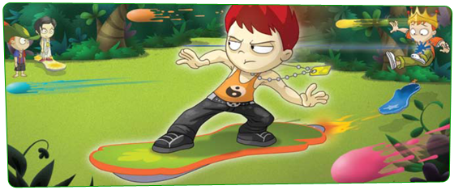

|


מהו אלבום קלפי האספנים של אקולוקו?
באלבום קלפי האספנים של אקולוקו הוא אלבום וירטואלי אותו מקבלים ברכישת ספר הרפתקאות מסדרת "חלוצי אקולוקו" ברשת "סטימצקי" או "צומת ספרים". אחרי הקשת קוד הפעלה (הקוד נמצא בעמוד הראשון למטה בספר ההרפתקאות שרכשתם) בכפתור ניהול האלבום  תוכלו להתחיל לנהל את האלבום שלכם: "לנעול" קלפים להדפיס אותם ולזכות בפרסים. תוכלו להתחיל לנהל את האלבום שלכם: "לנעול" קלפים להדפיס אותם ולזכות בפרסים.
חזרה למעלה.

רכשתי ספר הרפתקאות מסדרת "חלוצי אקולוקו" ב"סטימצקי" או "צומת ספרים". איך אני מקבל את אלבום קלפי האספנים?
בתוך ספר ההרפתקאות שרכשתם יופיע קוד מיוחד. על מנת להפעילו הכנסו לאקולוקו, הקליקו על כפתור ניהול האלבום מצד ימין לחלונית הצ'אט שלכם, בין כפתור המפה וכפתור הרפתקאות אקולוקו. בחלק התחתון של החלונית שנפתחה הקליקו על האלבום המואר בחלונית "אלבום קלפים לאספנים". בפעם הראשונה שתקליקו על האלבום תפתח חלונית מיוחדת בה ניתן להקליד את הקוד מספר ההרפתקאות של "חלוצי אקולוקו". הקלדתם? האלבום שלכם מוכן לשימוש.
תוכלו להגיע אליו בכל רגע בדיוק באותה הדרך: כפתור אלבום ולחיצה על אלבום .
חזרה למעלה.

היכן ניתן להשיג חבילות קלפי אספנות של חלוצי אקולוקו?
ישנן כמה דרכים להשיג קלפי אספנות של חלוצי אקולוקו:
- קניית חבילת קלפים בחנויות "סטימצקי" ו"צומת ספרים".
- קניית חבילת קלפים בחנות החלוצים באתר אקולוקו בעזרת כרטיס הנדירים.
- קבלת קלפים כפרס על משימות ומשחקים באקולוקו.
- החלפה תמורת קלפים עם חברים באקולוקו.
חזרה למעלה.

רכשתי חבילת קלפי אספנים. איך אני מממש אותה באקולוקו?
בכל חבילת "קלפי אספנים" של חלוצי אקולוקו, תקבלו קוד הפעלה.
הקליקו על כפתור "ניהול אלבום" , והקלידו את קוד ההפעלה בחלוניות המתאימות בחלק העליון של החלון שנפתח. לאחר מכן לחצו על "הפעל". אם הקלדתם את הקוד נכון, חבילת הקלפים תופיע בחלק האמצעי של החלון, ותוכלו ללחוץ עליה כדי לפתוח אותה ולראות אילו קלפים ופרס קיבלתם. אם לא הקלדתם את הקוד נכון או אם הקלדתם בטעות קוד שכבר מומש תקבלו הודעת שגיאה.
חזרה למעלה.

מה אפשר לעשות עם קלפי האספנים? איך מנהלים אותם באלבום? איך מקבלים פרסים?
אחרי שפתחתם חבילת קלפים, כל הקלפים שעדיין חסרים לכם באלבום יופיעו בדף המתאים באלבום שלכם. כדי לראות אותם, הקליקו על האלבום בתחתית חלון ניהול האלבום והאלבום שלכם ייפתח. דפדפו בתוכו ותראו את הקלפים שקיבלתם. הקלפים שכבר יש לכם יופיעו בשק החפצים שלכם בתגית הקלפים  . את הקלפים המופיעים באלבום תוכלו "לנעול". "נעילת" קלף מאפשרת להדפיס אותו (השתדלו להדפיס כמה שפחות, ולהשתמש בשני הצדדים של דף ההדפסה כדי לחסוך בנייר ובעצים) "נעילת" קלפים גם מאפשרת לזכות בפרסים נדירים, ברגע שתשלימו צירוף של קלפים. שימו לב! כשתנעלו קלף הוא ייגרע מ"שק החפצים" שלכם, ולא תוכלו להחליף אותו. הפעולה אינה ניתנת לביטול. . את הקלפים המופיעים באלבום תוכלו "לנעול". "נעילת" קלף מאפשרת להדפיס אותו (השתדלו להדפיס כמה שפחות, ולהשתמש בשני הצדדים של דף ההדפסה כדי לחסוך בנייר ובעצים) "נעילת" קלפים גם מאפשרת לזכות בפרסים נדירים, ברגע שתשלימו צירוף של קלפים. שימו לב! כשתנעלו קלף הוא ייגרע מ"שק החפצים" שלכם, ולא תוכלו להחליף אותו. הפעולה אינה ניתנת לביטול.
חזרה למעלה.

איך מרוויחים פרסים באלבום?
כדי להרוויח פרסים נדירים, כל שעליכם לעשות הוא להשלים את צירופי הקלפים באלבום שלידם מסומנים פרסים "ולנעול" אותם והפרס יחכה לכם בסל החפצים.
חזרה למעלה.

|